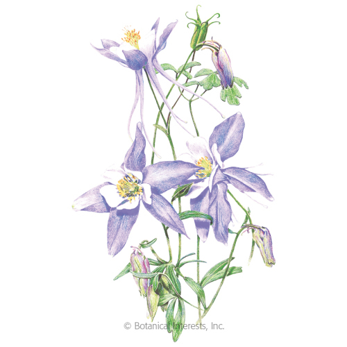
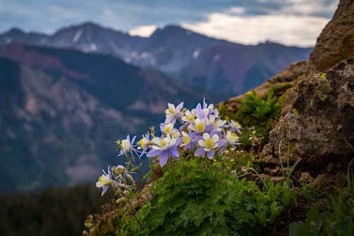

The Rocky Mountain Columbine is the flower of Colorado. It was discovered in 1820 on Pike's Peak by mountain climber Edwin James. Columbines bloom in pastel shades of blue, violet, red, yellow and white. There are 70 species of columbines in the world and about 1/3 are native to North America. A law was enacted in 1925 to protect this rare and delicate flower.Colorado specifies the white and lavender Rocky Mt. Columbine which has blue-violet petals and spurs, a white cup and yellow center. Blue is a symbol of the sky, white represents snow, and yellow symbolizes Colorado's gold mining history.
 